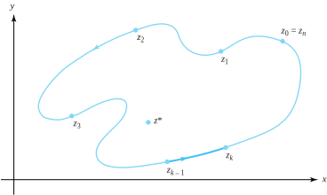
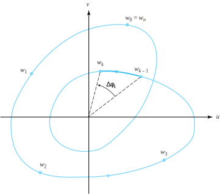

We now derive two results based on Cauchy ’s residue theorem. They have important practical applications and pertain only to functions all of whose isolated singularities are poles.
Definition8.7.1.Meromorphic function.
A function \(f\) is said to be meromorphic in a domain \(D\) provided the only singularities of \(f\) are isolated poles and removable singularities.
We make three important observations relating to this definition.
Analytic functions are a special case of meromorphic functions.
Rational functions \(f(z) =\frac{{P(z)}}{{Q(z)}}\text{,}\) where \(P(z)\) and \(Q(z)\) are polynomials, are meromorphic in the entire complex plane.
By definition, meromorphic functions have no essential singularities.
Suppose that \(f\) is analytic at each point on a simple closed contour \(C\) and \(f\) is meromorphic in the domain that is the interior of \(C\text{.}\) We assert without proof that Theorem 7.5.1 can be extended to meromorphic functions so that \(f\) has at most a finite number of zeros that lie inside \(C\text{.}\) Since the function \(g(z)=\frac{1}{f(z)}\) is also meromorphic, it can have only a finite number of zeros inside \(C\text{,}\) and so \(f\) can have at most a finite number of poles that lie inside \(C\text{.}\)
The following theorem, known as the argument principle, is useful in determining the number of zeros and poles that a function has.
Theorem8.7.2.argument principle.
Suppose that \(f\) is meromorphic in the simply connected domain \(D\) and that \(C\) is a simple closed positively oriented contour in \(D\) such that \(f\) has no zeros or poles for \(z\in C\text{.}\) Then
where \(Z_f\) is the number of zeros of \(f\) that lie inside \(C\) and \(P_f\) is the number of poles of \(f\) that lie inside \(C\text{.}\)
Proof.
Let \(a_1, \, a_2, \, \ldots, \, a_{Z_f}\) be the zeros of \(f\) inside \(C\) counted according to multiplicity and let \(b_1, \, b_2, \, \ldots, \, b_{P_f}\) be the poles of \(f\) inside \(C\) counted according to multiplicity. Then \(f(z)\) has the representation
\begin{align*}
\int_{C}\frac{dz}{(z-a_j)} \amp = 2\pi i, \text{ for } j=1,2,\ldots ,Z_f, \text{ and }\\
\int_{C}\frac{dz}{(z-b_k)} \amp = 2\pi i, \text{ for } k=1,2,\ldots ,P_f\text{.}
\end{align*}
The function \(\frac{g\,'(z)}{g(z)}\) is analytic inside and on \(C\text{,}\) so the Cauchy-Goursat theorem gives \(\int_{C}\frac{g\,'(z)}{g(z)}\,dz=0\text{.}\) These facts lead to the conclusion of our theorem if we integrate both sides of Equation (8.7.2) over \(C\text{.}\)
Corollary8.7.3.
Suppose that \(f\) is analytic in the simply connected domain \(D\text{.}\) Let \(C\) be a simple closed positively oriented contour in \(D\) such that for \(z\in C\text{,}\)\(f(z) \ne 0\text{.}\) Then
where \(Z_f\) is the number of zeros of \(f\) that lie inside \(C\text{.}\)
Remark8.7.4.
Certain feedback control systems in engineering must be stable. A test for stability involves the function \(G(z) =1+F(z)\text{,}\) where \(F\) is a rational function. If \(G\) does not have any zeros in the region \(\{z:\mathrm{Re}(z) \ge 0\}\text{,}\) then the system is stable. We determine the number of zeros of \(G\) by writing \(F(z) =\frac{P(z)}{Q(z)}\text{,}\) where \(P\) and \(Q\) are polynomials with no common zero. Then \(G(z) =\frac{ Q(z) +P(z)}{Q(z)}\text{,}\) and we can check for the zeros of \(Q(z) +P(z)\) by using Theorem 8.7.2. We select a value \(R\) so that \(G(z) \ne 0\) for \(\{z:|z| >R\}\) and then integrate along the contour consisting of the right half of the circle \(C_R(0)\) and the line segment between \(iR\) and \(-iR\text{.}\) This method is known as the Nyquist stability criterion.
Why do we label Theorem 8.7.2 as the argument principle? The answer lies with a fascinating application known as the winding number. Recall that a branch of the logarithm function, \(\log_{\alpha}\text{,}\) is defined by
where \(z=re^{i\phi }\ne 0\) and \(\alpha \lt \phi \le \alpha +2\pi\text{.}\) Loosely speaking, suppose that for some branch of the logarithm, the composite function \(\log_{\alpha}(f(z) )\) were analytic in a simply connected domain \(D\) containing the contour \(C\text{.}\) This would imply that \(\log_{\alpha}\big(f(z)\big)\) is an antiderivative of the function \(\frac{f\,'(z)}{f(z)}\) for all \(z\in D\text{.}\)Theorems 6.4.5 and Theorem 8.7.2 would then tell us that, as \(z\) winds around the curve \(C\text{,}\) the quantity \(\log_{\alpha}(f(z) )=\ln |f(z)| +i\arg_{\alpha}f(z)\) would change by \(2\pi i(Z_f-P_f)\text{.}\) Since \(2\pi i(Z_f-P_f)\) is purely imaginary, this result tells us that \(\arg_{a}f(z)\) would change by \(2\pi (Z_f-P_f)\) radians. In other words, as \(z\) winds around \(C\text{,}\) the integral \(\frac{1}{2\pi i}\int_{C} \frac{f\,'(z)}{f(z)}\,dz\) would count how many times the curve \(f(C)\) winds around the origin.
Unfortunately, we can’t always claim that \(\log_{\alpha}\big(f(z)\big)\) is an antiderivative of the function \(\frac{f\,'(z)}{f(z)}\) for all \(z \in D\text{.}\) If it were, the Cauchy-Goursat theorem would imply that \(\frac{1}{2\pi i}\int_{C} \frac{f\,'(z)}{f(z)}dz=0\text{.}\) Nevertheless, the heuristics that we gave—indicating that \(\frac{1}{2\pi i} \int_{C}\frac{f\,'(z)}{f(z)}dz\) counts how many times the curve \(f(C)\) winds around the origin—still hold true, as we now demonstrate.
Suppose that \(C:z(t)=x(t)+iy(t)\) for \(a \le t \le b\) is a simple closed contour and that we let \(a=t_0\lt t_1\lt \cdots\lt t_n=b\) be a partition of the interval \([a,b]\text{.}\) For \(k=0,1,\ldots,n\text{,}\) we let \(z_k=z(t_k)\) denote the corresponding points on \(C\text{,}\) where \(z_0=z_n\text{.}\) If \(z^*\) lies inside \(C\text{,}\) then the curve \(C:z(t)\) winds around \(z^*\) once as \(t\) goes from \(a\) to \(b\text{,}\) as shown in Figure 8.6.7.
Now suppose that a function \(f\) is analytic at each point on \(C\) and meromorphic inside \(C\text{.}\) Then \(f(C)\) is a closed curve in the \(w\) plane that passes through the points \(w_k=f(z_k)\text{,}\) for \(k=0,1,\ldots ,n\text{,}\) where \(w_0=w_n\text{.}\) We can choose subintervals \([t_{k-1},t_k]\) small enough so that, on the portion of \(f(C)\) between \(w_{k-1}\) and \(w_k\text{,}\) we can define a continuous branch of the logarithm
where \(\Delta \phi _k=\phi _k-\phi _{k-1}\) measures in radians the amount that the portion of the curve \(f(C)\) between \(w_k\) and \(w_{k-1}\) winds around the origin. With small enough subintervals \([ t_{k-1},t_k]\text{,}\) the angles \(\alpha_{k-1}\) and \(\alpha_k\) might be different, but the values \(\arg_{\alpha_{k-1}}w_{k-1}\) and \(\arg _{\alpha_k}w_{k-1}\) will be the same, so that \(\log_{\alpha_{k-1}}w_{k-1}=\log_{\alpha_k}w_{k-1}\text{.}\)

Figure8.7.5.The points \(z_k\) on the contour \(C\) that winds around \(z^*\)
We can now show why \(\int_{C}\frac{f\,'(z)}{f(z)}\,dz\) counts the number of times that \(f(C)\) winds around the origin. We parametrize \(C:z(t)\text{,}\) for \(a\le t \le b\text{,}\) and choose the appropriate branches of \(\log_{\alpha_k}w\text{,}\)giving
When we use the fact that \(\rho _0=\rho _n\text{,}\) the first summation in Equation (8.7.3) vanishes. The summation of the quantities \(\Delta \phi _k\) expresses the accumulated radian measure of \(f(C)\) around the origin. Therefore, when we divide both sides of Equation (8.7.3) by \(2\pi i\text{,}\) its right side becomes an integer (by Theorem 8.7.2) that must count the number of times \(f(C)\) winds around the origin.
Example8.7.6.
The image of the circle \(C_2(0)\) under \(f(z)=z^2+z\) is the curve given by \(\{(x,y) =(4\cos 2t+2\cos t,4\sin 2t+2\sin t) :0\lt t\lt 2\pi \}\) shown in Figure 8.7.7.

Figure8.7.7.The image curve \(f\big(C_2(0)\big)\) under \(f(z) =z^2+z\)
Note that the image curve \(f\big(C_2(0)\big)\) winds twice around the origin. We check this by computing \(\frac{1}{2\pi i}\int_{C_2^{+}(0)}\frac{f\,'(z)}{f(z)}\,dz = \frac{1}{2\pi i}\int_{C_2^{+}(0)}\frac{ 2z+1}{z^2+z}dz\text{.}\) The residues of the integrand are at \(0\) and \(-1\text{.}\) Thus
Finally, we note that if \(g(z) =f(z) -a\text{,}\) then \(g\,'(z) =f(z)\text{,}\) and thus we can generalize what we’ve just said to compute how many times the curve \(f(C)\) winds around the point \(a\text{.}\)Theorem 8.7.8 summarizes our discussion.
Theorem8.7.8.winding numbers.
Suppose that \(f\) is meromorphic in the simply connected domain \(D\text{.}\) If \(C\) is a simple closed positively oriented contour in \(D\)\ such that for \(z\in C\text{,}\)\(f(z) \ne 0\) and \(f(z) \ne\infty\text{,}\) then
known as the winding number of {\(\bm f(C)\)} about \(\bm a\text{,}\) counts the number of times the curve \(f(C)\) winds around the point \(a\text{.}\) If \(a=0\text{,}\) the integral counts the number of times the curve \(f(C)\) winds around the origin.
\begin{equation*}
W(C,a) =\frac{1}{2\pi i}\int_{C}\frac{1}{z-a}\,dz= \begin{cases}1, \amp \text{ if } a \text{ is inside } C, \text{ or } \\ 0, \amp \text{ if } a \text{ is outside } C, \end{cases}
\end{equation*}
which counts the number of times the curve \(C\) winds around the point \(a\text{.}\) If \(C\) is not a simple closed curve, but crosses itself perhaps several times, we can show (but omit the proof) that \(W(C,a)\) still gives the number of times the curve \(C\) winds around the point \(a\text{.}\) Thus winding number is indeed an appropriate term.
We close this section with a result that will help us gain information about the location of the zeros and poles of meromorphic functions.
Theorem8.7.10.Rouché’s theorem.
Suppose that \(f\) and \(g\) are meromorphic functions defined in the simply connected domain \(D\text{,}\) that \(C\) is a simply closed contour in \(D\text{,}\) and that \(f\) and \(g\) have no zeros or poles for \(z\in C\text{.}\) If the strict inequality \(|f(z)+g(z)| \lt |f(z)| + |g(z)|\) holds for all \(z \in C\text{,}\) then \(Z_f-P_f=Z_g-P_g\text{.}\)
Proof.
Because \(g\) has no zeros or poles on \(C\text{,}\) we may legitimately divide both sides of the inequality \(|f(z)+g(z)| \lt |f(z)| + |g(z)|\) by \(|g(z)|\) to get
\begin{equation}
\left|\frac{f(z)}{g(z)}+1\right| \lt \left|\frac{f(z)}{g(z)}\right| + 1, \text{ for all } z \in C\text{.}\tag{8.7.4}
\end{equation}
For \(z \in C, \; \frac{f(z)}{g(z)}\) cannot possibly be zero or any positive real number, as that would contradict Inequality (8.7.4). This means that \(C^*\text{,}\) the image of the curve \(C\) under the mapping \(\frac{f}{g}\text{,}\) does not contain the interval \([0,\infty)\text{,}\) and so the function defined by
where \(\frac{f(z)}{g(z)}=re^{i\phi }\ne 0\) and \(0\lt \phi \le 2\pi\text{,}\) is analytic in a simply connected domain \(D^*\) that contains \(C^*\text{.}\) We calculate
so \(w(z) =\log_0(\frac{f(z)}{g(z)})\) is an antiderivative of \(\frac{f\,'(z)}{f(z)}-\frac{g\,'(z)}{g(z)}\text{,}\) for all \(z \in D^*\text{.}\) Since \(C^*\) is a closed curve in \(D^*\text{,}\)Theorem 6.4.5 gives \(\int_{C^*}\left(\frac{ f\,'(z)}{f(z)}-\frac{g\,'(z)}{g(z)}\right)dz=0\text{.}\) According to Theorem 8.7.2 then,
Suppose that \(f\) and \(g\) are analytic functions defined in the simply connected domain \(D\text{,}\) that \(C\) is a simple closed contour in \(D\text{,}\) and that \(f\) and \(g\) have no zeros for \(z \in C\text{.}\) If the strict inequality \(|f(z)+g(z)| \lt |f(z)|+|g(z)|\) holds for all \(z \in C\text{,}\) then \(Z_f = Z_g\text{.}\)
Remark8.7.12.
Theorem 8.7.10 is usually stated with the requirement that \(f\) and \(g\) satisfy the condition \(|f(z)+g(z)|\lt |g(z)|\text{,}\) for \(z \in C\text{.}\) The improved theorem that we gave was discovered by Irving Glicksberg (see the American Mathematical Monthly, 83 (1976), pp. 186-187). The weaker version is adequate for most purposes, however, as the following examples illustrate.
Example8.7.13.
Show that all four zeros of the polynomial \(g(z)=z^4-7z-1\) lie in the disk \(D_2(0) =\{z:|z|\lt 2\}\text{.}\)
Solution.
Let \(f(z) =-z^4\text{.}\) Then \(f(z) +g(z)=-7z-1\text{,}\) and at points on the circle \(C_2(0) =\{z:|z| =2\}\) we have the relation
Of course, if \(|f(z)+g(z)|\lt |f(z)|\text{,}\) then as we indicated in Remark 8.7.12 we certainly have \(|f(z)+g(z)|\lt |f(z)|+|g(z)|\text{,}\) so that the conditions for applying Corollary 8.7.11 are satisfied on the circle \(C_2(0)\text{.}\) The function \(f\) has a zero of order \(4\) at the origin, so \(g\) must have four zeros inside \(D_2(0)\text{.}\)
Example8.7.14.
Show that the polynomial \(g(z) =z^4-7z-1\) has one zero in the disk \(D_1(0)\text{.}\)
Solution.
Let \(f(z) =7z+1\text{,}\) then \(f(z)+g(z)=z^4\text{.}\) At points on the circle \(C_1(0) =\{z:|z| =1\}\) we have the relation
The function \(f\) has one zero at the point \(-\frac{1}{7}\) in the disk \(D_1(0)\text{,}\) and the hypotheses of Corollary 8.7.11 hold on the circle \(C_1(0)\text{.}\) Therefore \(g\) has one zero inside \(D_1(0)\text{.}\)
ExercisesExercises
1.
Let \(f(z) =z^5-z\text{.}\) Find the number of times the image \(f(C)\) winds around the origin if
(a)
\(C=C_{\frac{1}{2}}(0)\text{.}\)
Solution.
\(1\text{.}\)
(b)
\(C\) is the rectangle with vertices \(\pm \frac{1}{2}\pm 3i\text{.}\)
(c)
\(C=C_2(0)\text{.}\)
Solution.
\(5\text{.}\)
(d)
\(C=C_{1.25}(i)\text{.}\)
2.
Show that four of the five roots of the equation \(z^5+15z+1=0\) belong to the annulus \(A(0,\frac{3}{2},2) =\{z:\frac{3}{2} \lt |z| \lt 2\}\text{.}\)
3.
Let \(g(z) =z^5+4z-15\text{.}\)
(a)
Show that there are no zeros in \(D_1(0)\text{.}\)
Solution.
Let \(f(z) =15\text{.}\) Then \(|f(z)+g(z)| = |z^{5}+4z| \lt 6 \lt |f(z)|\text{.}\) As \(f\) has no roots in \(D_1(0)\text{,}\) neither does \(g\) by Rouché’s Theorem.
(b)
Show that there are five zeros in \(D_2(0)\text{.}\)
\hint{Consider \(f(z) =-z^5\text{.}\)}
Remark: A factorization of the polynomial using numerical approximations for the coefficients is
Show that there are two zeros in \(D_1(0)\text{.}\)
Solution.
Let \(f(z) =-6z^2\text{.}\) Then \(|f(z)+g(z)| = |z^{5}+2z+1|\text{.}\) It is easy to show that \(|f(z)+g(z)| \lt |f(z)|\) for \(z \in C_1(0)\text{.}\) Complete the details.
(b)
Show that there are five zeros in \(D_2(0)\text{.}\)
6.
Let \(g(z) =z^{6}-5z^4+10\text{.}\)
(a)
Show that there are no zeros in \(|z|\lt 1\text{.}\)
(b)
Show that there are four zeros in \(|z|\lt 2\text{.}\)
(c)
Show that there are six zeros in \(|z|\lt 3\text{.}\)
7.
Let \(g(z) =3z^3-2iz^2+iz-7\text{.}\)
(a)
Show that there are no zeros in \(|z|\lt 1\text{.}\)
Solution.
Let \(f(z) =7\text{.}\) Then \(|f(z)+g(z)| \le 6 \lt |f(z)|\text{.}\) Show the details and explain why this gives the conclusion you want.
(b)
Show that there are three zeros in \(|z|\lt 2\text{.}\)
8.
Use Rouché’s theorem to prove the fundamental theorem of algebra. \hint{For the polynomial \(g(z)=a_0+a_1z+\cdots+a_{n-1}z^{n-1}+a_nz^n\text{,}\) let \(f(z)=-a_nz^n\text{.}\) Show that, for points \(z\) on the circle \(C_R(0)\text{,}\)
and conclude that the right side of this inequality is less than 1 when \(R\) is large.}
9.
Suppose that \(h(z)\) is analytic and nonzero and \(|h(z)|\lt 1\) for \(z \in D_1(0)\text{.}\) Prove that the function \(g(z) = h(z) - z^n\) has \(n\) zeros inside the unit circle \(C_1(0)\text{.}\)
Solution.
Let \(f(z) =z^n\text{.}\) Then \(|f(z)+g(z)| = |h(z)| \lt 1 = |f(z)|\text{.}\) Complete the argument.
10.
Suppose that \(f(z)\) is analytic inside and on the simple closed contour \(C\text{.}\) If \(f(z)\) is a one-to-one function at points \(z\) on \(C\text{,}\) then prove that \(f(z)\) is one-to-one inside \(C\text{.}\) \hint{Consider the image of \(C\text{.}\)}